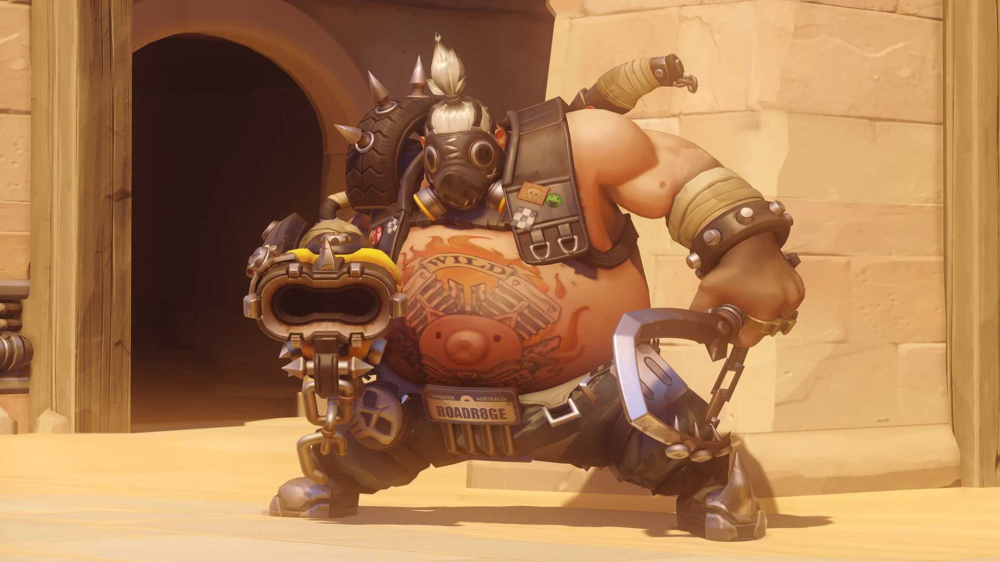

Heroes Tanques
Los tanques absorben el daño y asaltan posiciones fortificadas, como grupos de enemigos o cuellos de botella. Si juegas como tanque, tú lideras la carga.
doomfist
Akande Ogundimu, líder innato y guerrero de élite, perdió el brazo derecho durante la Crisis Ómnica, cuando se unió a las filas de Talon. Tras escalar puestos, acabó con la vida de su superior, el anterior Doomfist, así que se adueñó de su arma y título epónimos. Ahora, está decidido a sumir el mundo en un nuevo conflicto para cumplir su misterioso fin.
D.VA
Hana Song, más conocida por su nombre virtual: «D.Va», es el no va más. Fue gamer profesional, pero ahora pone sus habilidades al servicio de Corea del Sur pilotando un meca. Ella y otros pilotos, conocidos como el escuadrón MEKA, le plantan cara a los gwishin invasores, una amenaza mecánica de las profundidades del mar.
junkerqueen
La otrora habitante del páramo Odessa «Dez» Stone lleva siendo la gobernante de las polémicas facciones chatarreras durante más de una década. Allá donde va se convierte en su campo de batalla; cada asiento es su trono; y cualquier ser vivo del planeta es su siervo, tanto si le gusta como si no. Su conquista legendaria no ha hecho más que empezar...
Orisa
Orisa, obra de Efi Oladele, una niña prodigio de tan solo once años, se concibió para defender la ciudad de Numbani de todo tipo de amenazas. Cuando el dúo logró frustrar el asalto de Doomfist, perteneciente a Talon, se convirtieron en heroínas nacionales. Ahora, Orisa está lista para proteger a los necesitados y usar su poder en pos del bien.
Ramattra
Ramattra nunca fue diseñado para coexistir con la humanidad. La serie ómnica Ravager fue creada al principio de la Crisis Ómnica y formaba parte de una clase de ómnicos comandantes cuyo rol era guiar a las unidades al combate y adaptar diferentes protocolos estratégicos a las condiciones del campo de batalla en tiempo real.
Reinhardt
Reinhardt Wilhelm vive según los antiguos ideales de la caballería: honor, justicia y valor. Fue uno de los fundadores de Overwatch y, durante décadas, luchó por el bien del mundo. Tras el declive de la organización, se trasladó a Europa para servir como caballero de antaño, defendiendo a los inocentes con su escudera, Brigitte, hasta que Winston les pidió retomar Overwatch.
